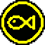
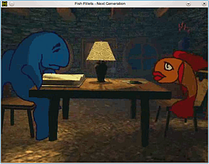
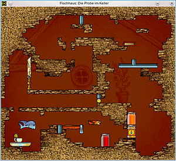

Fish Fillets NG
Dieser Artikel wurde für die folgenden Ubuntu-Versionen getestet:
Ubuntu 16.04 Xenial Xerus
Ubuntu 14.04 Trusty Tahr
Zum Verständnis dieses Artikels sind folgende Seiten hilfreich:

Fish Fillets NG  ist ein Sokoban-Klon. Es ist ein Linuxport des Puzzlespiels Fish Fillets , für welches der Quellcode im Jahr 2002 unter der GPL veröffentlicht wurde. Neben der Portierung auf Linux wurde das Spiel um zusätzliche Level und Sprachübersetzungen erweitert.
ist ein Sokoban-Klon. Es ist ein Linuxport des Puzzlespiels Fish Fillets , für welches der Quellcode im Jahr 2002 unter der GPL veröffentlicht wurde. Neben der Portierung auf Linux wurde das Spiel um zusätzliche Level und Sprachübersetzungen erweitert.
Ziel des Spiels ist es, zwei Fische durch das Verschieben verschiedener Gegenstände zum Ausgang des jeweiligen Levels zu leiten. Im Vergleich zu klassischen Sokoban-Spielen steuert man bei Fish Fillets NG abwechselnd zwei Spielfiguren - einen kleinen und einen großen Fisch - was das Spiel kniffliger gestaltet. Zusätzlich kann der kleinere Fisch nicht alle Gegenstände verschieben. Ein weiterer Unterschied zu anderen Sokoban-Spielen ist, dass Gegenstände nach unten Fallen, sobald diese über eine Kante geschoben werden.
|  |
| Intro |
|  |
| Screenshot Level 3 |
Installation¶
Ubuntuquellen¶
Das Spiel kann einfach über das folgende Paket aus den Ubuntuquellen installiert werden[1]
fillets-ng (universe)
 mit apturl
mit apturl
Paketliste zum Kopieren:
sudo apt-get install fillets-ng
sudo aptitude install fillets-ng
und befindet sich anschließend im Menü in der Kategorie "Spiele -> Logikspiele".
Vom Hersteller wird auch eine tschechische Sprachausgabe der Dialoge zur Verfügung gestellt. Diese kann bei Bedarf über das Paket fillets-ng-data-cs installiert werden. Eine Deutsche oder Englische Sprachausgabe gibt es bisher nicht.
Bedienung¶
In den ersten beiden Level des Spiels erhält man eine kleine Einführung zur Steuerung der Fische. Außerdem wird erklärt, wie Gegenstände verschoben werden können und welche Aktionen man nicht ausführen sollte, da diese zum Tod der Spielfiguren führen. Eine genaue Auflistung welche Bewegungen der Fische und Gegenstände erlaubt ist, findet man in der Anleitung auf der Herstellerseite.
Die Fische können mit der Tastatur oder der Maus gesteuert werden. Mittels der Pfeiltasten
← ,
↑ ,
→ ,
↓ bewegt man den gerade aktiven Fisch in die entsprechende Richtung und schiebt bei Kontakt mit einem Gegenstand diesen in die gleiche Richtung. Alternativ kann man die Fische mit der Maus steuern. Hält man die linke Maustaste  gedrückt, schwimmt der Fisch, sofern keine Gegenstände im Weg sind, zur Position des Mauszeigers. Verwendet man die rechte Maustaste
gedrückt, schwimmt der Fisch, sofern keine Gegenstände im Weg sind, zur Position des Mauszeigers. Verwendet man die rechte Maustaste  schiebt der Fisch die auf dem Weg zum Mauszeiger befindlichen Gegenstände vor sich her. Zwischen dem kleinen und dem großen Fisch wechselt man mittels der Leertaste
.
schiebt der Fisch die auf dem Weg zum Mauszeiger befindlichen Gegenstände vor sich her. Zwischen dem kleinen und dem großen Fisch wechselt man mittels der Leertaste
.
Hat man eine Bewegung ausgeführt, die man gerne Rückgängig machen möchte, kann man dies mit der Taste - tun. Zum Speichern des aktuellen Spielstands eines Levels dient die Taste F2 , geladen wird mit F3 . Ist man an einem Punkt angelangt, an dem das Level nicht mehr zu schaffen ist, kann mit ⌫ das Level neu starten. Mittels Esc gelangt man zurück zum Hauptmenü.
Level auswählen¶
Im Hauptmenü werden alle bereits gespielten Level angezeigt und man kann zum Spielbeginn wählen, in welchem dieser Level man starten möchte. Wählt man ein bereits abgeschlossenes Level, wird die Anzahl der Lösungsschritte angezeigt, die man selbst zum beenden des Levels benötigt hat. Zusätzlich wird die Anzahl der Lösungsschritte des besten Spielers aus dem Onlinehighscore von Fish Fillets NG eingeblendet. Klickt man auf die Schaltfläche, auf der ein Auge abgebildet ist, kann man sich seine eigene Lösung noch einmal anschauen. Mit einem Klick auf die Schaltfläche, auf der ein Gehirn zu sehen ist, kann man das Level erneut spielen.
Optionen¶
Über den Menüpunkt "Optionen" im Hauptmenü kann man die Sound- und Musiklautstärke konfigurieren, sowie die Sprache der Dialoge auswählen. Zusätzlich kann die (tschechische) Sprachausgabe, sofern installiert, und der Untertitel de-/aktiviert werden.
- Erstellt mit Inyoka
-
 2004 – 2017 ubuntuusers.de • Einige Rechte vorbehalten
2004 – 2017 ubuntuusers.de • Einige Rechte vorbehalten
Lizenz • Kontakt • Datenschutz • Impressum • Serverstatus -
Serverhousing gespendet von